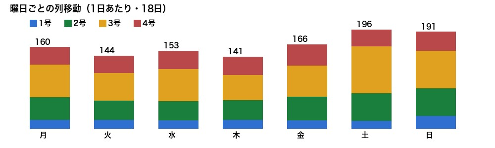
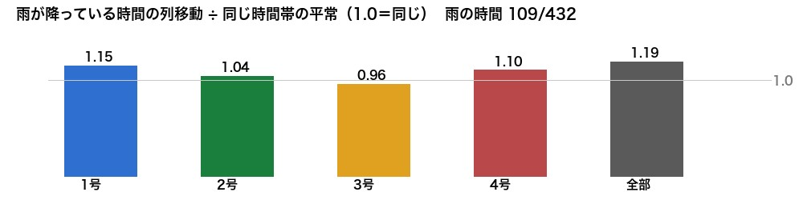
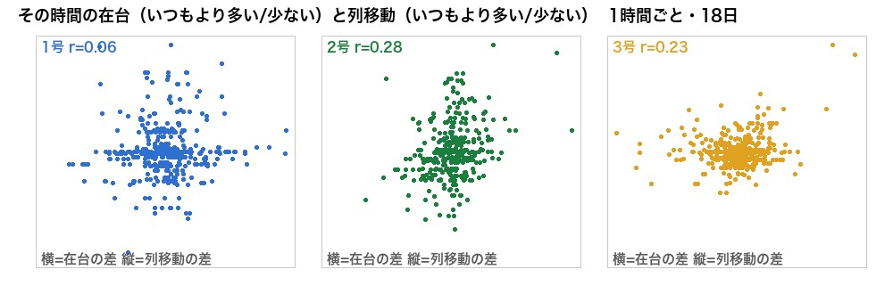
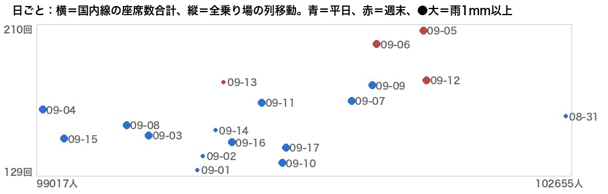

列移動は何と関係があるか — 多面的に調べた（2026-09-18）
8/31〜9/17 の18日（新しい数え方）。到着便の測り方を変え、客の種類、遅延、在台（プールの車の数）、曜日、雨、乗り場どうし、前の時間との関係を一通り見た。
答えの一覧（強い順）
| 要因 | 効き方 | 強さ |
|---|---|---|
| 曜日（週末） | 土日は平日より +25〜45%（1〜3号）。4号は変わらない | 日ごとの差の 61% を説明 |
| 雨 | 雨の時間は同じ時間帯の平常より +19%（全体）。日単位でも雨の日ほど多い（r=0.45） | 週末に足すと 70% まで上がる |
| 在台（プールの車の数） | いつもより車が多い時間は列移動も多い（2号 r=0.28、3号 0.23）。車が無ければ動けない＝供給側 | 弱〜中 |
| 前の1時間の勢い | 忙しい時間は次の1時間も忙しい（1号 0.30、3号 0.27） | 弱 |
| 到着便 | 着いた時刻でもロビーに出る時刻でも、座席数でも便数でも推定タクシー客でも、国際/国内でも、遅延でも、ずらし0〜3時間どれでも r≦0.15 | 無し |
| 乗り場どうし | 2号と3号は少しだけ同時に忙しい（0.20）。3号と4号は無関係（0.00） | ほぼ無し |
① 曜日

土（196）・日（191）は平日（141〜166）より多い。増えるのは 1〜3号（3号 平日58→週末84）。4号は平日36・週末35で同じ。
② 雨

羽田の1時間雨量（Open-Meteo 実績）で 0.5mm以上の時間（109時間）。
雨の時間は全体で +19%。1号 +15%、4号 +10%、3号だけ変わらず。雨の日が多かった期間（9/3〜9/12 はほぼ毎日）なので、日単位は週末と混ざって見える点に注意。
③ 在台（プールにいる車の数）

同じ時間帯どうしで「いつもより車が多い時に、列移動もいつもより多いか」。2号・3号で正の関係。車が多いほど1列ぶんが動く回数が増える（供給があるから出られる）。4号は無関係。
④ 日ごと（週末・雨・国内線）

週末（赤）は上に、雨の日（大きい●）も上寄り。国内線の座席数は平日と週末でほぼ同じ（100,385 vs 101,244）なので、座席数との相関 0.48 は「便が多い日」ではなく週末・雨の効果を拾っている。
日単位の当てはめ：列移動 ≈ 平日の水準 ＋ 週末 36回 ＋ 雨 0.3回/mm（説明力 70%）。
⑤ 使い方
- 列移動（＝出庫の速さ）の予測は 「時間帯 × 曜日（週末か）」を土台に、雨で上乗せ、直近1時間の勢いと在台で微調整。到着便は入れない。
- 4号は曜日にも雨にも在台にも反応が薄い＝別の仕組み（深夜運用・国際線の客層）。4号だけは今後も別扱い。
- 18日は短い。連休・台風・欠航の日が入ると「到着便」の判定が変わる可能性は残る（現状の毎日ほぼ同じ便数では判定できない）。